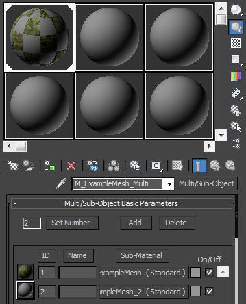
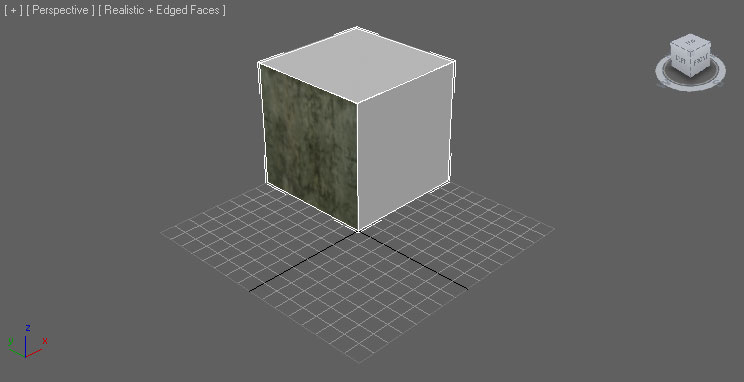
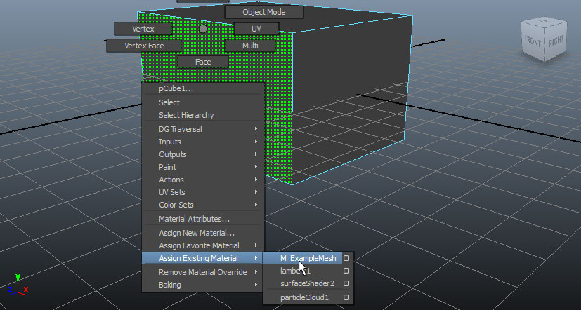
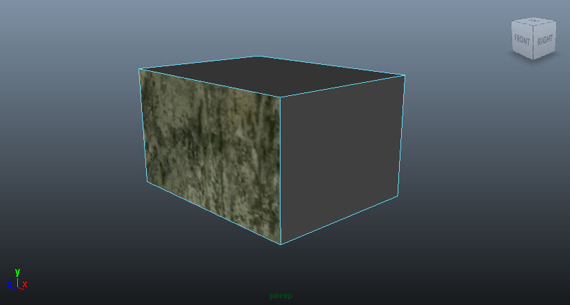
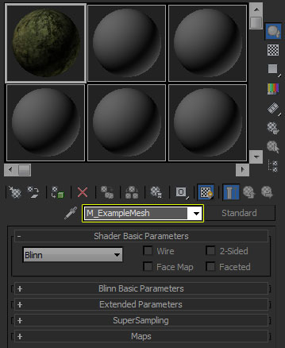
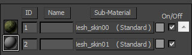
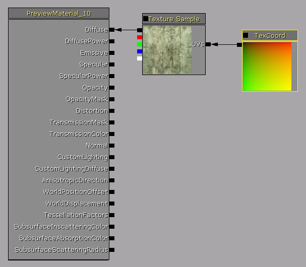
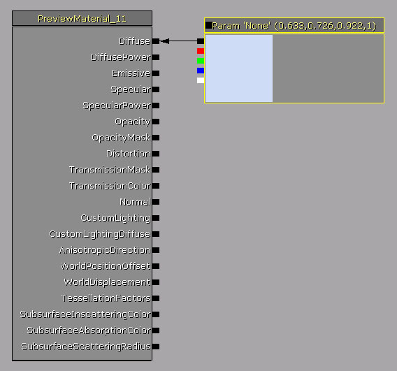

UDN
Search public documentation:
FBXMaterialPipelineJP
English Translation
中国翻译
한국어
Interested in the Unreal Engine?
Visit the Unreal Technology site.
Looking for jobs and company info?
Check out the Epic games site.
Questions about support via UDN?
Contact the UDN Staff
中国翻译
한국어
Interested in the Unreal Engine?
Visit the Unreal Technology site.
Looking for jobs and company info?
Check out the Epic games site.
Questions about support via UDN?
Contact the UDN Staff
UE3 ホーム > FBX コンテンツ パイプライン > FBX マテリアル パイプライン
FBX マテリアル パイプライン
概要
マテリアルのサポート
- Standard (標準)
- Multi/Sub-Object (マルチ / サブ オブジェクト)
- Surface (サーフェス)
- Anisotropic (異方性)
- Blinn
- Lambert (ランバート)
- Phong
- Phone E
| マップ / テクスチャ | 3dsMax のセットアップ | Maya のセットアップ |
|---|---|---|
| ディフューズ | Diffuse (ディフューズ) > Bitmap (ビットマップ) | Color > File |
| エミッシブ | Self-illumination (セルフイルミネーション) > Bitmap | Incandescence (発光) > File |
| スペキュラ | Specular Level (スペキュラレベル) > Bitmap | Specular Color > File |
| スペキュラの累乗 | Glossiness (光沢度) > Bitmap | Cosine Power (余弦の累乗) > File |
| 法線マップ | Bump > Normal Bump (法線バンプ) > Normal > Bitmap | Bump > File |
マルチ マテリアル


Multi/Sub-Object 内の各 Standard マテリアルのために「Unreal」エディタ内でマテリアルが作成されるとともに、インポートされたメッシュが、それらマテリアルそれぞれのためのマテリアル スロットをもつことになります。マテリアルがメッシュに適用されると、3dsMax におけるのと同様に、メッシュのうちの対応するポリゴンにのみ影響を与えることになります。 Maya Maya で、メッシュにマルチ マテリアルを適用するのは非常に簡単です。マテリアルを適用したいメッシュの面を選択し、マテリアルを適用するだけです。

Maya においてメッシュに適用された各マテリアルのために、「Unreal」エディタにおいてマテリアルが作成されるとともに、インポートされたメッシュが、それらマテリアルそれぞれのためのマテリアル スロットをもつことになります。マテリアルがメッシュに適用されると、Maya におけるのと同様に、メッシュのうちの対応するポリゴンにのみ影響を与えることになります。マテリアルの命名

Maya Maya の場合、「Unreal」エディタ内のマテリアル名は、Maya 内のメッシュに適用されたシェーディング エンジン名から取られます。
マテリアルの順序
メッシュに適用されるマテリアルの順序が重要な場合、マテリアルのための特別な命名規則を使用することによって、特定の順序を指定することができます。デフォルトでは、マテリアルが「Unreal」エディタ内でランダムに作成されます。したがって、マテリアルの順序を保証することができません。このことが問題となるのは、たとえば、次のような場合です。すなわち、胴体のマテリアルが第 1 のマテリアルであり、頭部のマテリアルが第 2 のマテリアルであるというように、キャラクターのシステムがマテリアルの順序に依存しているキャラクターを扱う場合です。 「Unreal」では、 skin** という命名規則を使用することによって、マテリアルの順序を指定します。これをマテリアル名の全体として使用することもできますし、既存のマテリアル名に追加することも可能です。マテリアル名の中に入っているだけでよいのです。 2 つのマテリアルを常に一定の順序にしておく必要がある場合は、例えば、以下のように命名します。-
M_ExampleMesh_skin00 -
M_ExampleMesh_skin01

テクスチャのインポート
 Texture Sample (テクスチャ サンプル) 式が、「Unreal」エディタにおいて新たに作成されたマテリアル内に作成されるとともに、インポートされたテクスチャがその Texture Sample に割り当てられます。Texture Coordinate (テクスチャ座標) 式もマテリアルに追加され、Texture Sample の UVs の input に接続されます。
Texture Sample (テクスチャ サンプル) 式が、「Unreal」エディタにおいて新たに作成されたマテリアル内に作成されるとともに、インポートされたテクスチャがその Texture Sample に割り当てられます。Texture Coordinate (テクスチャ座標) 式もマテリアルに追加され、Texture Sample の UVs の input に接続されます。

3D アプリケーション内でマテリアルに適用されたテクスチャが、「Unreal」で使用できないフォーマットである場合は、インポートされません。このような場合や、そもそもマテリアルにテクスチャがない場合は、「Unreal」エディタ内のマテリアルに、ランダムにカラー化されたベクター パラメータが入れられます。